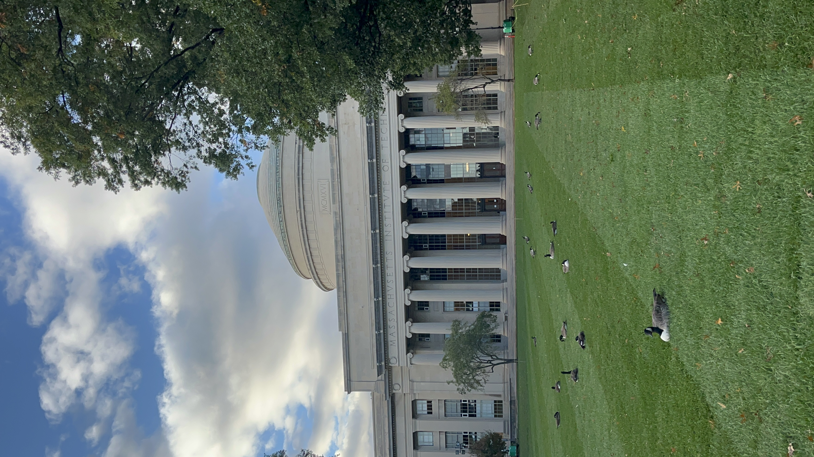
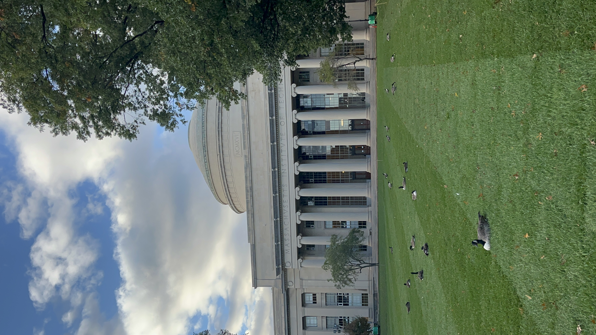
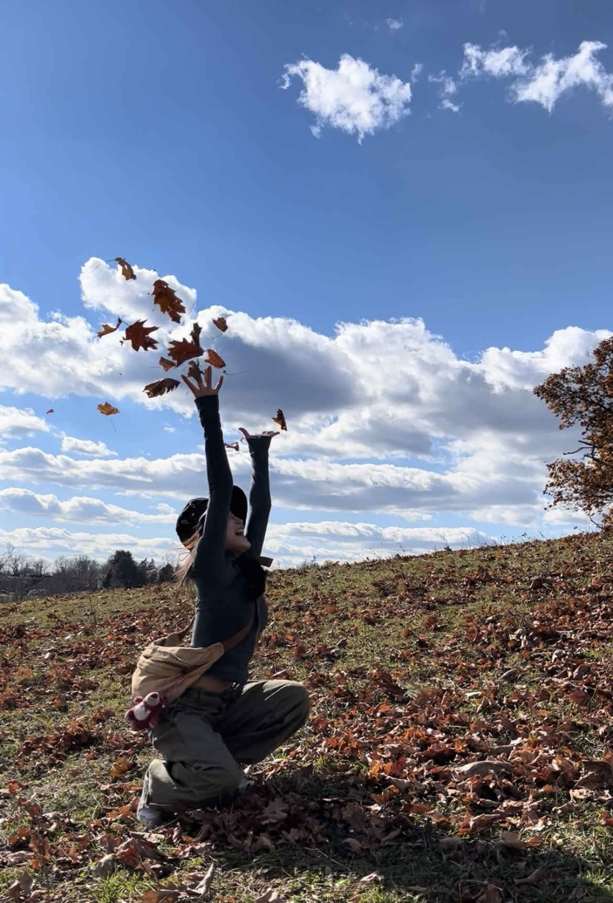
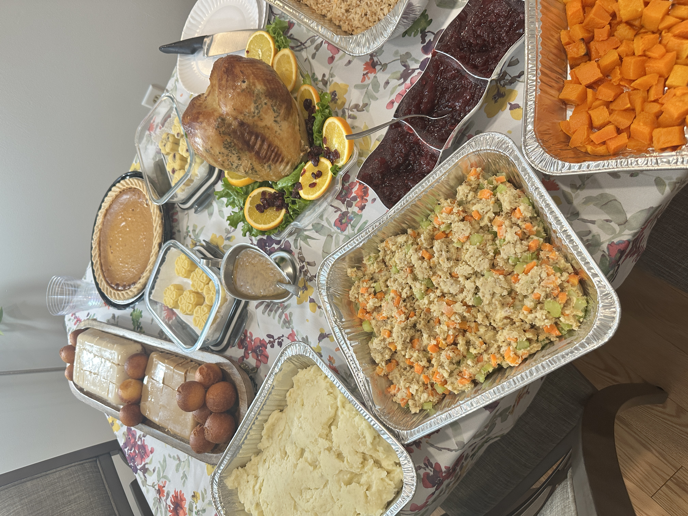
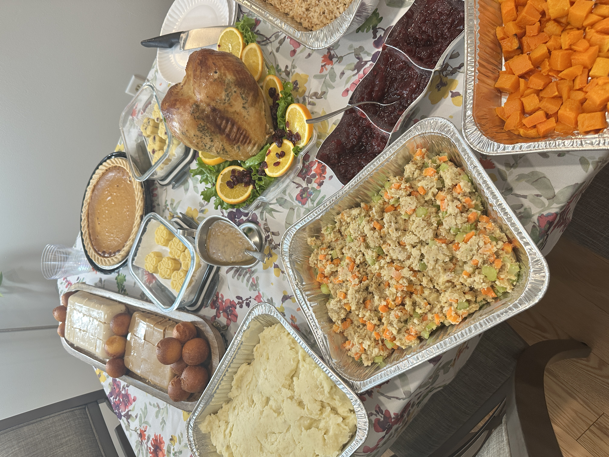

工作地点及职位
Quin House, a Private Social Club in Boston, 从Food Runner(2024.9-2025.1)到Cook(2025.2-2025.8)


薪资
发放周期：Biweekly
工作福利
每周工作25-30h,上班时间包餐(&kitchen厨师疯狂投喂以下!),每年40h年假+工作时长累积假期(每30h累积1h)


住宿环境
xhs自找, 2b1b, $1150/月, 位于Malden，距离地铁站步行5min
通勤距离：30min的直达train，unlimited交通月卡$60波士顿境内交通随便刷（房间巨漂亮，窗户朝西，到了冬天外面的树叶落光，透过枝桠可以看到远处的夕阳）


Cultural Experience
University
 


Hiking



Festival

 



Travel